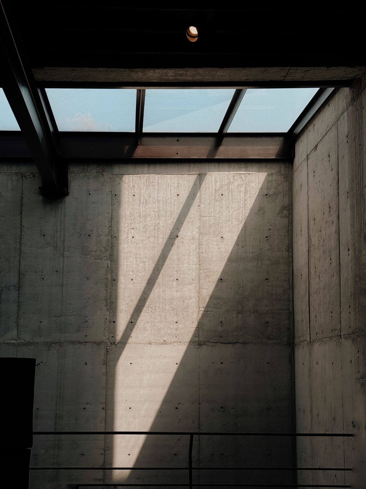
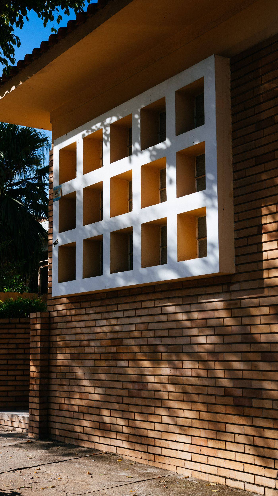
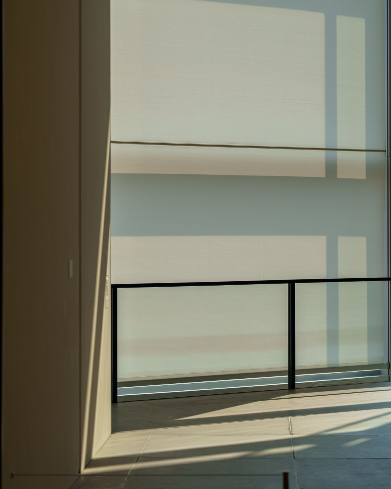
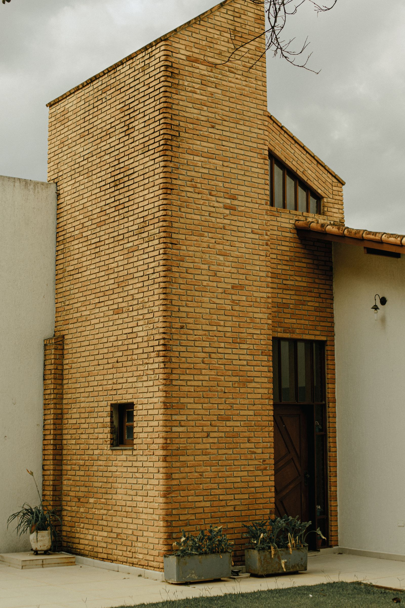
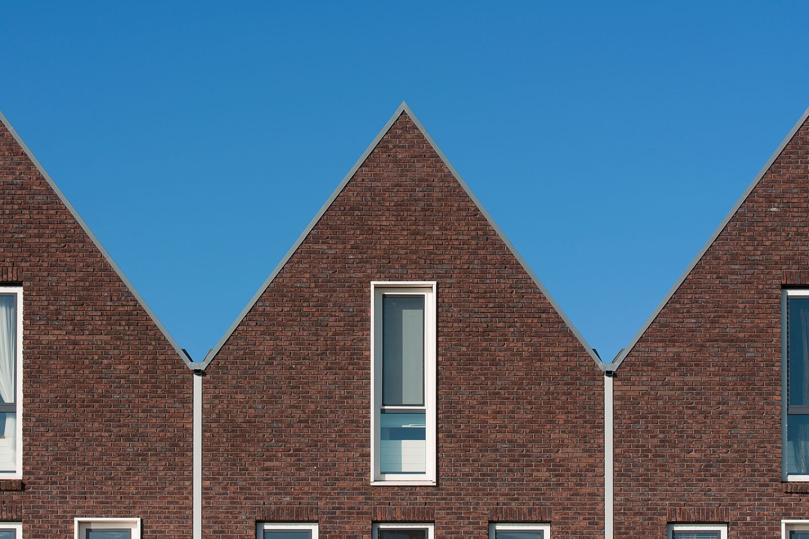
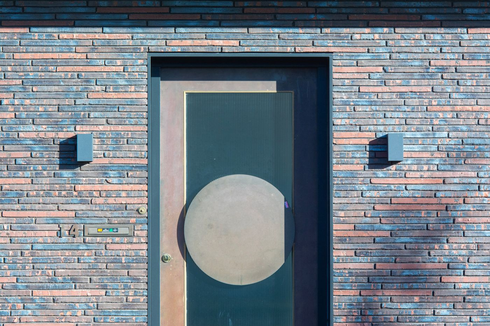
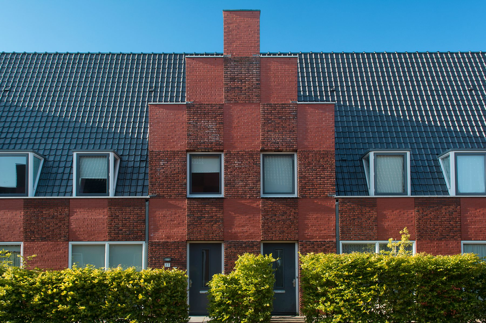
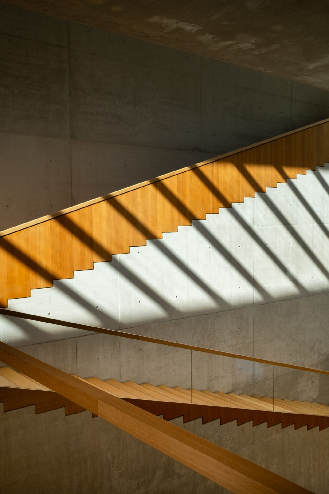

Thick walls, deep windows.
Lampblack is a two-person architecture practice in Brooklyn. We design brick and timber houses built to last a century.



Eleven buildings since 2016, from a garden studio in Beacon to a village library.
Projects
Each one shown as we drew it, at the same scale, walls in black.
-
Tower house
Hudson, New York, 2024
Three rooms stacked on a lot sixteen feet wide. The walls are fourteen inches of yellow brick, so the house stays cool in August without air conditioning.
1,150 sq ftfloor area3storeys14 inwalls
-
Gable row
Kingston, New York, 2023
Six family houses under one roof line, each with its own gable, front door and garden. Built for a land trust, sold below market.
6houses980 sq fteach2storeys
-
Round door house
Red Hook, Brooklyn, 2022
On a loud street, the front door is the only opening. Behind it the rooms turn around a courtyard, and every window looks onto the garden.
1,600 sq ftfloor area1opening on the street
-
Stepped house
Croton-on-Hudson, New York, 2021
A brick house whose gable steps down to meet its lower neighbours, with a hedge in place of a fence along the street.
2,100 sq ftfloor area2storeys
We start every drawing with the walls. A thick wall keeps the heat in during winter and out in summer, stops the noise of the street, and still looks right in a hundred years. Then we cut the openings, each one placed for a view, a patch of sun or a way in.
Ines Okafor
Architect, licensed in New York. Before Lampblack, nine years building schools in Lagos and London.
Tom Lindqvist
Architect and joiner. Draws every stair and window by hand before it goes to the builder.
How we work
We visit the site with you, draw the plan together, and stay on the job until the last brick is laid.

Tell us about your site.
Send us the address and a few photos. We answer within a week, and the first visit is on us.